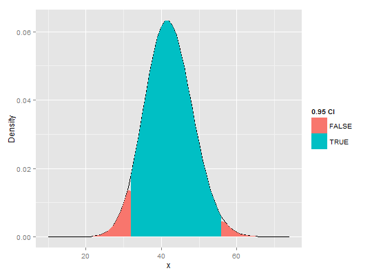

dpcr_density_table(input, average = FALSE, methods = "wilson", conf.level = 0.95)
dpcr.TRUE, calculates density of the average number of
molecules per partition. If FALSE, instead performs calculations for
the total number of positive molecules."wilson", "agresti-coull",
"exact", "prop.test", "profile", "lrt",
"asymptotic", "bayes", "cloglog", "logit",
"probit". Default value is "wilson". See Details.input) of
data frames containing densities and borders of confidence intervals.
Calculates the density of the number of positive molecules or the average number
of molecules per partition of dpcr objects.
dens <- dpcr_density_table(six_panels) # create plot using ggplot2 library(ggplot2) ggplot(dens[["Experiment2.2"]], aes(x = x, y = y)) + geom_line() + geom_area(aes(fill = !(conf_up | conf_low))) + scale_y_continuous("Density") + scale_fill_discrete("0.95 CI")
dpcr_density for easy analysis and plots of single runs.